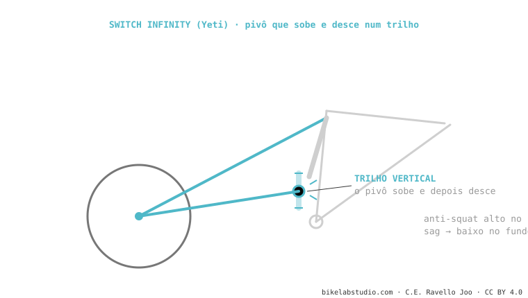

O Switch Infinity da Yeti troca a bieleta inferior por um pivô que desliza na vertical sobre duas guias (Kashima, da Fox) e muda de sentido no meio do curso. Isso dá anti-squat alto no sag (pedala firme) que cai ao afundar (solto e pouco kickback). Exclusivo da Yeti; pede manutenção rigorosa das guias. É um dos sistemas.
Quase todos os sistemas rotam bieletas. A Yeti fez algo estranho: deslizar um pivô em linha reta. E funciona.

Ao subir o pivô no primeiro terço e baixá-lo depois, a Yeti consegue o que todo projetista busca: anti-squat alto onde você pedala, baixo onde você bate. A transição é muito suave porque o movimento é contínuo, não um salto de bieleta. Por isso as SB se sentem eficientes subindo e muito soltas no fundo.
Não: o pivô deslizante gera um pivô virtual, tipo duplo elo. O que o distingue é que se desloca na vertical.
Sim: as guias expostas pedem limpeza e lubrificação periódicas para não perder o toque.
Diga o modelo e dizemos sua curva e o serviço que o Switch Infinity precisa. Fale conosco pelo WhatsApp
© 2026 BikeLab Studio. Conteúdo sob CC BY 4.0: você pode copiar, traduzir e publicar, inclusive com fins comerciais. A citação é obrigatória. Sem atribuição, a licença é revogada automaticamente (CC BY 4.0, §6.a) e o uso passa a ser violação de direitos autorais: solicitamos a retirada do conteúdo e sua desindexação. · Design e propriedade: Carlos Ravello Joo